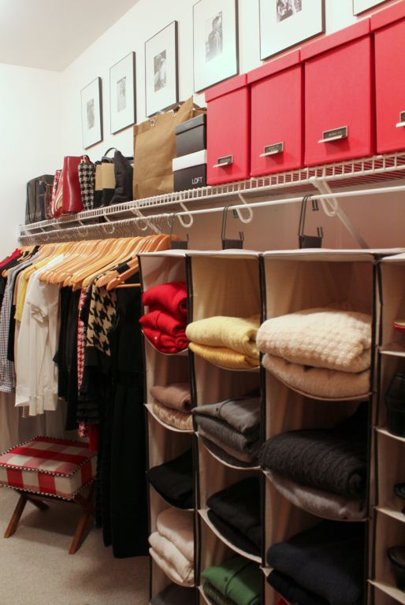

.png)
.PNG)
.PNG)
.PNG)
.PNG)
.PNG)
.JPG)
.JPG)
.PNG)
.PNG)


and I sort of “owe” it to you.
If you were reading Talk of the House waaaaay back in February of this year, you may remember that my New Year’s goal for the year was to be more organized. Along with that came a goal of doing one organization project each month and sharing it with you on the first of the following month. ¬†I managed to write about January’s coat closet project on February 1. (And just to let you know, I’ve since replaced the “donations” basket with a “donations” hamper. ¬†It works much better.)
And then during the first week of March we looked at the master bedroom closet that got all organized and pretty-fied during February.
And then?
Nothing…
I really dropped the ball on that goal; didn’t I?? ¬†I did get a little more organization done this year (but not 7 month’s worth of projects though. üôÅ ) So… I owe you a peek in the closet the boys shared before they moved to Seattle almost two months ago. ¬†I don’t have a before picture, but I will try to explain what we did this summer so that you can picture it in your head.
Their closet is right behind the door there in the photo below.

It is not huge, but it is a walk-in.  First, all the items had been hanging on plastic hangers, and I replaced them with wooden ones (which did a better job with all their pants.)
There had been a black dresser that you faced when you opened the closet door.  It was used by our youngest son for his folded clothing.  We moved it over to the side and removed one of the rods, which still left enough room for his hanging clothes.
All of the boys’shoes had been stuck in a hanging bag on the back of the closet door. ¬†(Well, when they put them there..most of the time they were thrown on the floor in there.) ¬†When the dresser was moved to the side, an empty bookcase was relocated there in the closet and became a great spot for all the shoes. ¬†Size 13 shoes take up a lot of space! üôÇ ¬†Wool scarves were put in the small bin on the top shelf.
Then I purchased storage bins at Target to hold all their miscellaneous things.  (Similar ones available here.)
And the tags are simply round pieces of black cardstock with chalk pen writing and tied on with black ribbon.
That is all there is to see of their closet. (Remember, it is a tiny space.) ¬†But ¬†I do have a dream of a closet for you to see. ¬†It was the inspiration for our sons’ closet (but we are nowhere near its beauty in our final version.) The shelf of books really makes this one lovely.

Another dream one for the guys…the built in shelves in this one are perfect.


.PNG)
Oh, closet organization! Thanks for the inspires. I need to tackle our son’s as well.
Kelly,
The boy’s closet looks really nice. The inspiration look very nice too but they are all bigger so I really think you did a great job with the space you had to work with. We have built two personal houses in 14 years and I have to say the closets are never big enough. Thanks for sharing!
———————————————————————–
Thanks Dawn. I think the size of our closets is pretty good. I would just like MORE closets. If I were building again, I would put in a closet that is solely for linens, and I would build a “party pantry” to house trays, serving platters, etc. as part of the kitchen. Maybe one day…:)
Kelly
I love it! I don’t know why, but a well-organized and nicely done closet makes me happy. The matching wood hangers and storage boxes really pull it all together.
——————————————————————-
Organization makes me happy because it makes it easy to put things away…which speeds up clean up time…which gives me more free time (whatever THAT is! üôÇ )Perhaps that is why it makes you happy too, Kim.
Kelly
What a nice closet for your sons! Gets me motivated to work in closets again. It’s a job that can be overwhelming if you pull out everything at once. I try to do a third at a time. When the guys come home they will be so surprised at the nifty changes you have made!! Hope they get to come home for the holidays!! Which will be here before we know!
———————————————————————
Yes, it can be overwhelming. So you are smart to tackle it a little at a time Louvina. The guys have already seen the closet nicely organized. This was a summer project that I never got around to doing a post on. (Better late than never, right?) I just hope their closet in Seattle is somewhat organized. My middle did say the closet in their apartment was big enough to be a room. So that sounds pretty nice to me!
Kelly
Oh how I can relate to the size 13 shoe! My son’s big toe is as big as his foot was when he was born. That just blows my mind. The closet looks great! Love the bookcase for holding the shoes! I wish my sons’ closet was that big. When we built the house, we were planning on having 2 children, just not two at one time. (twins) So, we only built 2 bedrooms with small closets that aren’t walk in. You just stand there and look into them. Then son with size 13 feet came into our world! Sharing a bedroom is one thing but a very small closet is another. Small children’s clothes are one thing, but adult clothes are another! Not to mention the shoes! And size 13! Well one does wear size 10.5. haha
———————————————————————–
How funny…our other son wears a 10.5! üôÇ
Kelly
Kelly,
You did a beautiful job with the closet. I love wooden hangers and purchased them for our closets when they were super reasonably priced at Costco. I later returned my blouses to plastic hangers since they took up less space and my closet tends to be forever crowded. I love the bins on top (from Target) and will have to look for some for my closet. Thanks for the inspiration to get going on my closet this fall.
xo,
Karen
——————————————————————–
I sure wish we had a Costco near us. I bet their prices are great. The wooden hangers in the boys’ closet here came from Target when they, too, were on sale. The bins up top hold quite a bit of “stuff” and it has helped to disguise the mess up there! I hope your closet organization is successful, Karen.
Kelly
Organized closets make me so happy and since none of mine are at the moment, I’ll live vicariously through yours. Love!
———————————————————————
You go right ahead and live through ours then, Kris! üôÇ
Kelly
The closet looks GREAT!!!! If they are anything like my two boys, it will look that way until they have been home for 5 minutes :^)
My two are long since grown, but their wives assure me that nothing much has changed :^)
Blessings to you,
J
———————————————————————-
You are so right! It won’t take our middle child 5 minutes to give a space a real “lived in” look. LOL How funny about what your daughters-in-law say. üôÇ Thank you for the compliments about our sons’ closet.
Kelly
While the closet is wonderful, and the other closets you showed are super, I couldn’t help but think of your two sons moving to Seattle. Yikes!! One of my three sons moved to Omaha (from our home in Oklahoma) last month, for his first big job and while I was happy for him, I was so sad for me. üôÇ I feel that way for you too. It is so hard for momma’s to let go of their children, but moms and sons have that very special bond! I hope it is not a permanent move for your sons (or MINE!!), but a move of growing and starting a new life (till they can get back our way)! Still love every one of your posts. Lori Lucas
———————————————————————
Lori you are so very thoughtful to think of me and our sons’ move. It has been a little hard, but we Skype on Sunday evenings. So it is like visitiing with them face to face. Like you, I hope the move is not a permanent one. Our children seem to return to home for awhile every few years. I don’t know if that will be the case this time for the oldest one, but he wanted to live on the West Coast, and this is his dream. So I am happy for him (and hope to visit him at some point out there. üôÇ )
Kelly
Wow! What beautiful closets! I wish mine looked like that. If they did, I would leave the doors open so everyone could see how nice they are. üôÇ
Sue
———————————————————————
I love it! How clever you are!
Kelly
I think it looks great Kelly. The hangers really unify the closet and the bookcase is perfect for shoes. And it looks easy enough to actually use.
And don’t feel bad about the organizing posts, I started to do kind of the same thing on my blog about 2 years ago and STILL haven’t finished. I think the projects you’ve shared are all great ~ although now my question is, what are you doing with a great big walk in closet that is probably empty?? lol
———————————————————————-
You haven’t finished after two years Sue?? Gulp. Maybe I am not as bad off as I thought then. üôÇ I am glad you liked the organization projects. As far as their closet goes, it does have some of their things in it, and I am not planning on adding anything else to it. They do have an opportunity to come home later, so the closet is going to stay as “theirs.”
Thanks for asking!
Kelly
First of all, I love your hall closet and your master closet makeovers! The red and the photos in your closet make it so personal and so you! LOVE it! You also did an incredible job on the boys’ closet as well. I am always excited to see how people organize their things. The wood shoe shelf is just perfect! You have motivated me to get moving on some more of my closets around here…
Shelley
———————————————————————–
Wow, thank you Shelley for your enthusiastic comment! I am glad I could help get you motivated on your closets. Now if someone could just get me started on the one in our daughter’s bedroom. üôÅ
Kelly
I worked in my guest room closet yesterday. I was determined to throw out and organize. I did but at the back of my mind I was wondering how long before it gets piled up again!!:) Such is life. I would love to have built in place storage for my walk in closet. So much space is wasted at present. Oh well, maybe one day!
——————————————————————-
Maybe one day you WILL get that closet you want! I would like to replace the metal shelves in all our closets with wooden ones. Those are my “maybe one day” items.:)
Kelly
I just love your closet ideas. your master is my inspiration for ours, & with fall here & the changing of clothes, this will be my in my project wheelhouse real soon. I’m in a total organization mode too. I also really like the bedroom make over. I have older teen, almost 20’s, & some here too, & it’s time their rooms get make overs too. Thanks for the vision! üôÇ
——————————————————————-
Cynde, good luck with your bedroom redos and closet organization. Sounds like you have some major projects to tackle soon! Thank you for the compliments on the spaces in our home.
Kelly
Kelly, You did a fabulous job organizing your sons’ closet. Love the bookshelf for shoes! Oh, I wish we had walk in closets in all the bedrooms of this old house. Oh well, I’m feeling inspired to at least get my own closet organized, and the hubby’s…that would be a good start! Thanks for the inspiration!
——————————————————————————————
Thank you Gracia. The bookshelf has worked out perfectly (until our middle son gets his own place and needs his bookcase for…books!) Glad I could give you some inspiration here today. Good luck with your closet organization!
Kelly